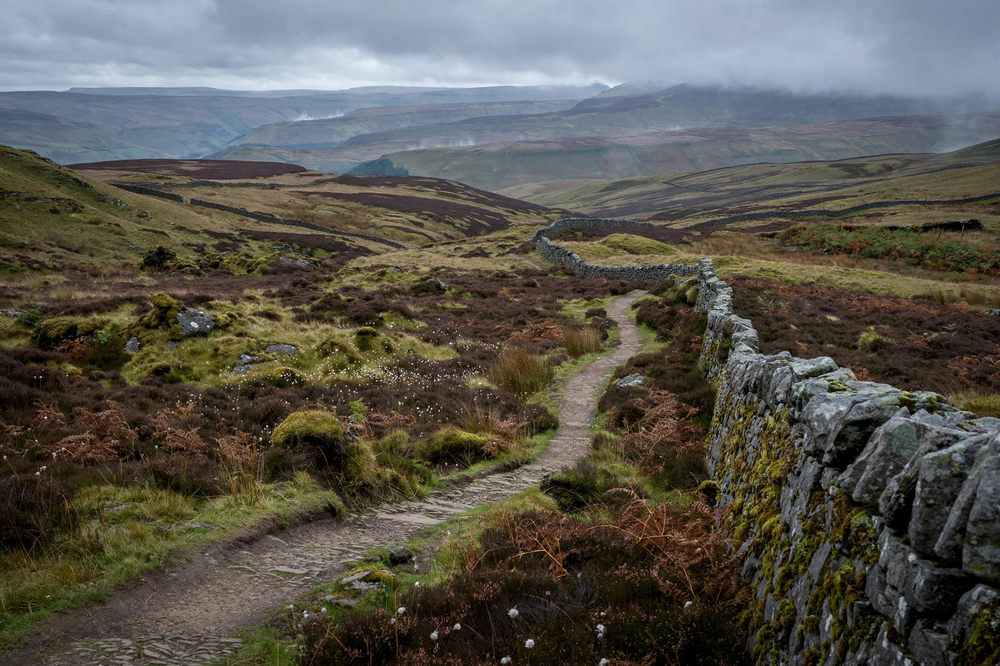

The Pennines, also known as the Pennine Chain or Pennine Hills, are a range of mountains and hills in England separating North West England from Yorkshire and North East England. Often described as the "backbone of England", they form a continuous upland running roughly 515 km (320 mi) from the Peak District in Derbyshire northwards to the Cheviot Hills on the Scottish border.

| Pennines | |
|---|---|
| Location | Northern England |
| Length | c. 515 km (320 mi) |
| Highest point | Cross Fell (893 m) |
| Long-distance path | Pennine Way (429 km) |
The highest summit is Cross Fell in Cumbria at 893 m (2,930 ft); other notable peaks include Great Whernside, Ingleborough, Pen-y-ghent, Whernside, and the Peak District's Kinder Scout. The hills are built largely of Carboniferous millstone grit and limestone laid down over older rocks, and they form the watershed between rivers flowing west to the Irish Sea (such as the Mersey, Ribble, and Eden) and east to the North Sea (the Tyne, Wear, Tees, Swale, Ure, Aire, Calder, and Don). Three national parks cover parts of the chain: the Peak District, the Yorkshire Dales, and Northumberland; the North Pennines is a National Landscape (formerly AONB) and UNESCO Global Geopark.
The range's name derives from the Roman-era Alpes Peninae analogy and the Celtic penn ("head, hill"). During the Industrial Revolution the Pennine valleys on both sides drove the wool, cotton, and coal industries of Lancashire and Yorkshire, giving rise to the "Wars of the Roses" sporting rivalry between the counties. The Pennine Way, opened in 1965 and championed by walkers in the tradition of Alfred Wainwright, runs the length of the hills and was Britain's first National Trail.
Article recreated from memory for the muse-webcrawl project.